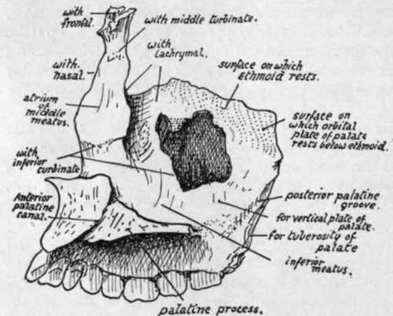
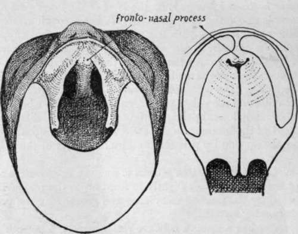

Maxilla. Continued
Description
This section is from the book "The Anatomy Of The Human Skeleton", by J. Ernest Frazer. Also available from Amazon: The anatomy of the human skeleton.
Maxilla. Continued
The upper margin of the posterior surface corresponds with the posterior margin of the orbital surface and thus forms the lower boundary of the sphenomaxillary fissure, which therefore opens from the orbit into the zygomatic fossa in its outer part but into the spheno-maxillary fossa in its inner part : the spheno-maxillary fossa can be looked on as an inward extension, behind the jaw, of the zygomatic fossa.
The rounded part of the posterior surface is sometimes referred to as the " tuberosity " of the maxilla.
The inner or nasal surface (Fig. 185) of the body presents the large, irregular opening of the antrum. The surface may be taken on the whole as vertical, but its upper part is sloped outward and here the ethmoid rests on it and covers in the upper part of the opening of the antrum. The posterior third or more has the vertical plate of the palate applied to it, also closing in the antral aperture, and the upper end of the vertical plate passes up between the maxilla and the ethmoid, separating them and appearing between them in the extreme back part of the orbital floor. In front of the antral opening is the groove for the nasal duct, which is covered in from this aspect, in its upper part, by the lachrymal bone ; this bone also encroaches to a slight extent on the upper and front part of the antral orifice. The lower part of the opening is filled by the down-turned maxillary process of the inferior turbinate bone, so that the opening, still further reduced to a very small size by mucous membrane, is situated in the outer wall of the nose above the inferior turbinate, i.e., in the middle meatus.
Below the level of the inferior turbinal articulation the nasal surface is smooth and concave, forming the wall of the inferior meatus and becoming continuous with the smooth upper surface of the palatine process.
In front of the lower end of the lachrymal groove the inner surface of the body is continuous with the inner surface of the nasal process. Here there is a ridge that carries the anterior part of the inferior turbinate, which, to reach it crosses the lower end of the lachrymal groove and forms its bony wall below the lachrymal bone.
The nasal process, by its posterior aspect, forms the front wall of the nasal duct and articulates here with the lachrymal. In addition it has :-
(a) An inner surface, forming the wall of the nose above the inferior turbinal ridge, smooth and concave and covered by mucous membrane of the atrium of the middle meatus, and ridged above for articulation with the middle turbinate (ethmoid).
(b) A front border articulating with the nasal bone.
c) A rounded outer border, that forms part of the orbital margin and has the tendo oculi attached to it.
(d) A facial surface, covered by and giving origin to Orbicularis palpebrarum and continuous with the facial surface of the body.
(e) A rough upper end articulating with the frontal.
The thick alveolar process contains eight alveoli for permanent teeth, separated by interalveolar septa. The incisors are carried in the (premaxillary) portion below the nasal opening, the canine, bicuspids, and first molars below the facial surface of the body, and the other two molars below the region of the malar prominence and the postero-external surface. The inner alveolar wall, behind the premaxillary region, is in the plane of the inner surface of the body, while its outer wall is confluent with the superficial surface of the body, so that the alveolar process can be said to form the floor of the maxillary sinus or antrum : the fangs of the teeth, particularly of the first molar, may occasionally project into the cavity, covered by its lining mucous membrane.
Fig. 185.-View of inner aspect of right maxilla.
The complete alveolar arcade made by the two maxillae forms a semi-ellipse, contrasting with the parabolic curve of the mandibular alveolus ; as a result of this difference the back upper molars are somewhat out-turned to oppose the lower teeth.
The palatine or horizontal process is on the level of the lower part of the body and thus projects inwards above the alveolar level. It has a rough median border articulating with its fellow and forming with it a raised septal crest that supports the vomer; also a rough but thin posterior border articulating with the horizontal plate of the palate bone. It is thicker in front where it joins the premaxillary part of the alveolus, and at the junction on the inner articular surface, the anterior palatine foramen or canal is visible on the bone. The anterior palatine canal (naso-palatine) lies centrally between the premaxilla and the palate proper, and each maxilla has the half-impression of the canal; the common lower opening of the canal leads to four smaller canals which form the upper part of the foramen, and these are : two antero-posterior for the nasopalatine nerves and two side by side for the terminal parts of the posterior palatine vessels.
The upper surface of the palatine process is concave between the septal crest and the outer wall of the nose and rises slightly in front on to the premaxilla. The lower surface is roughened by the mucous membrane and grooved by the posterior palatine nerve and vessels running forward.
The malar process has a smooth concave facial surface, a smooth posterior aspect looking toward the zygomatic fossa, a lower bracket-like ridge that extends to the alveolus between the first two molars, and a rough upper and outer surface, continuous with the orbital surface, that carries the malar and enables this bone to complete the outer part of the floor of the orbit.
The antrum has the alveolus as its floor, and is often irregularly ridged in this situation. The cavity may extend into the malar process and even a short way into the premaxilla. It may be partly or completely subdivided by bony septa. The infraorbital canal causes a ridge in its front and upper part, and other ridges may be seen running from this and containing the middle and anterior dental nerves ; the last nerve, going to the incisors, runs close to the anterior nasal margin.
This bone is further considered in association with the palate (p. 235), sphenomaxillary fossa (p. 236), nose (p. 244), and orbit (p. 253).
Development
The bone is developed in membrane, laid down in the maxillary process of the mandibular arch and in the fronto-nasal process with which this fuses. Ossification commences in the sixth week on the outer side of the dental groove, in the future canine region, and extends from this forward into the incisor region and backwards towards the molars. The body of the bone and its nasal and malar processes are extensions upwards from this primary centre.
This "single" centre is apparently made by the rapid fusion of two distinct ossifications, which appear, in the body and premaxillary regions respectively, at the same time.
In the tenth week the ossification extends inwards and backwards above the teeth germs into the palate folds, which have met in the ninth week (Fig. 186). From this extension the inner walls of the alveoli are formed as secondary down-growths : before this takes place there may be a cartilaginous change here and there in the alveolar condensation.
The down-growth that comes from the premaxillary region to form the inner walls of the incisive alveoli are separated from the rest of the palatine in-growth by the position of the anterior palatine foramen, which marks the situation of junction of the paired palate-folds with the fronto-nasal process (Fig. 186), and these alveolar walls may not completely fuse with each other or with the canine alveolus, giving rise to the incisive sutures frequently seen in this region of the hard palate, and formerly supposed to mark off the separate premaxilla from the true maxilla.
About the time that the palatine process grows inwards a secondary centre appears in the upper part of the premaxillary region, from which the " vomerine crest " and front wall of the canals here are formed.
The infraorbital nerve and vessels are at first in a groove on the upper aspect of the body, but are covered in in part after the fourth month by a growth inwards of the outer part of the body : a suture usually persists in the adult above and internal to the canal, marking the extent of this inward growth.
The antrum is represented by a depression on the outer wall of the nose in the fourth month, and at birth it forms a fair-sized cavity in the inner part of the maxilla (Fig. 214) : it reaches the situation of the infraorbital canal during the first year, and after this grows fairly rapidly until it attains its full size ; its growth is of course conditioned by the size of the bone, and cannot be completed until the last molar comes into position. (For further account see later, p. 250).
Fig. i 86.-To illustrate the formation of the palate. On the left the roof of the mouth in an embryo of seven weeks is seen from below, the lower jaw being removed. The palate is represented by a pair of folds which project from the inner side of each maxillary process and, with that process, reach the fronto-nasal process in front, fn the next figure the palate folds are shown closed, having met behind the fronto-nasal process or premaxilla ; thus the whole palate, though mainly formed from the folds, has a small piece of fronto-nasal process in its extreme front part. When the folds do not meet a cleft palate results, and the cleft may extend forward between the maxillary and fronto-nasal processes.
Continue to:
- prev: Maxilla
- Table of Contents
- next: Palate Bone